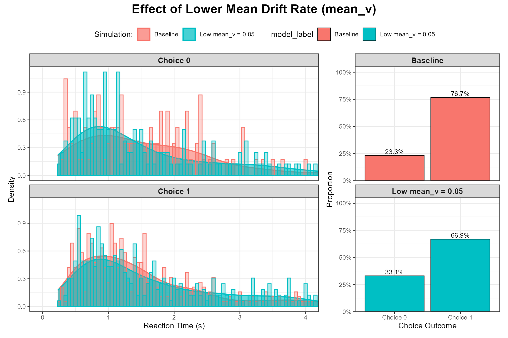
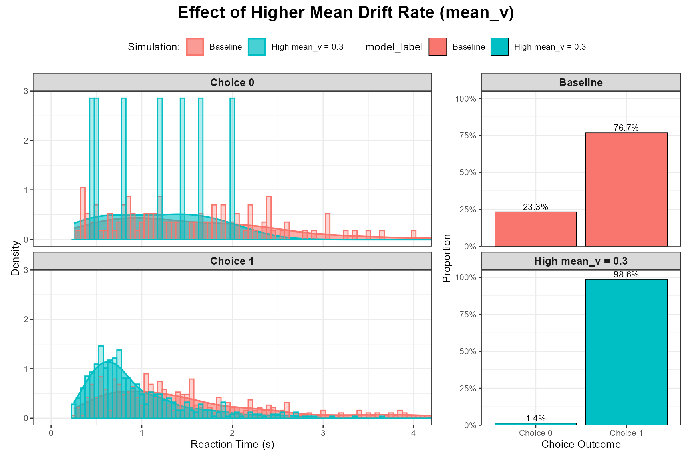
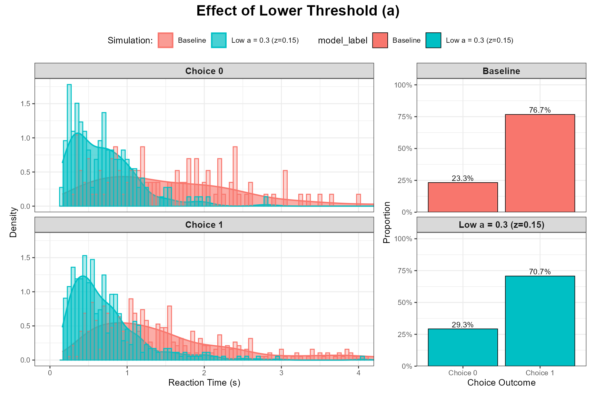
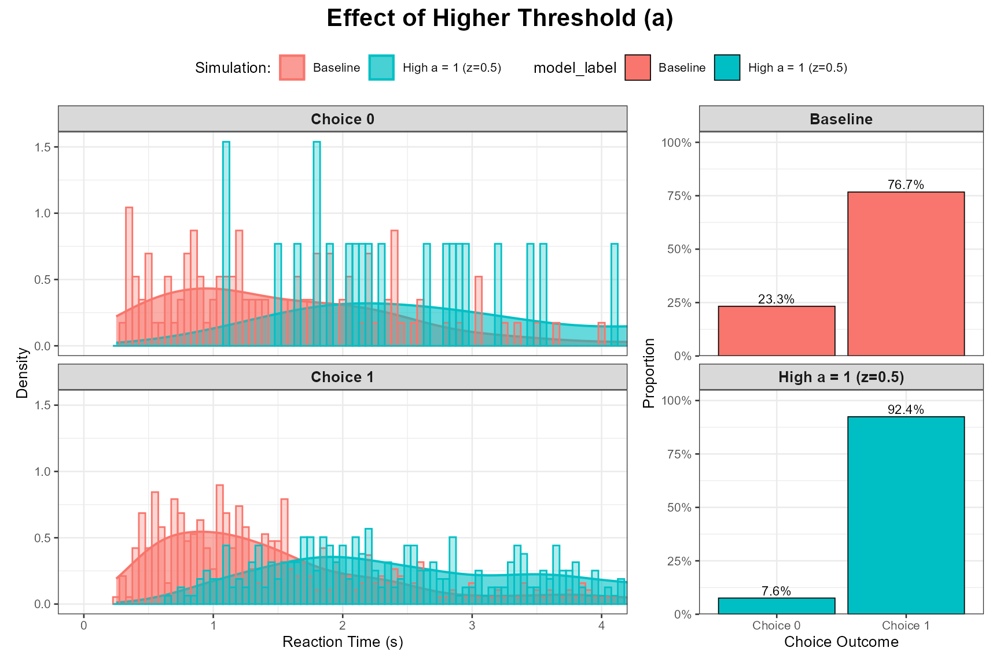
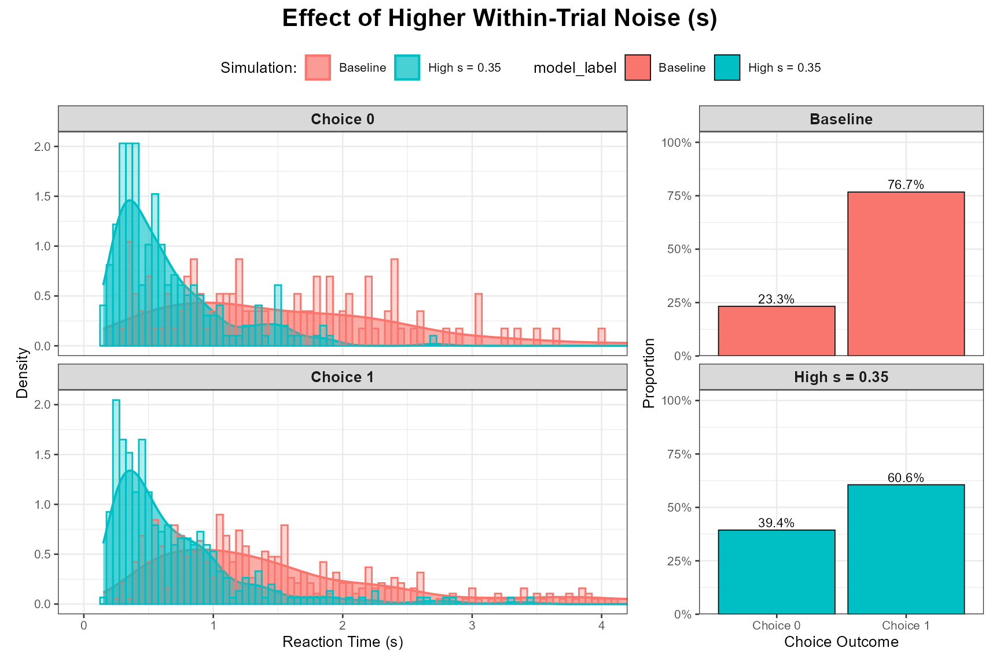
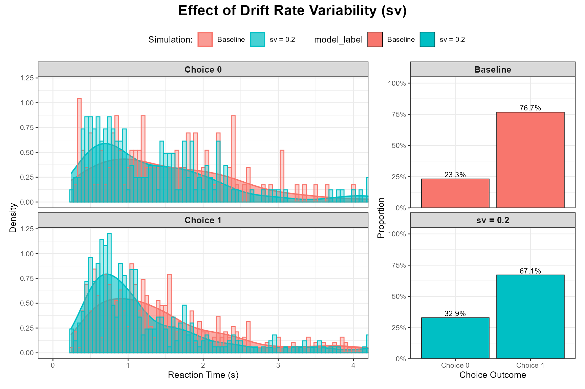
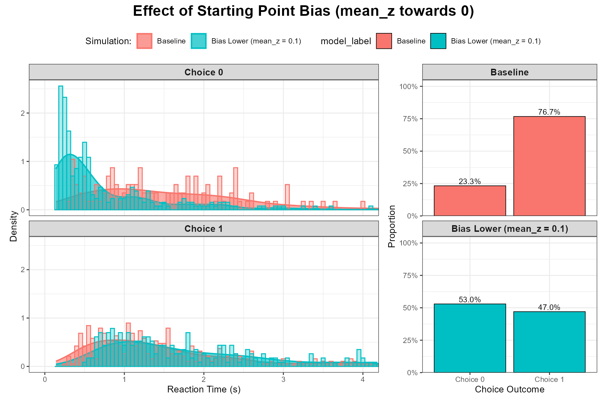
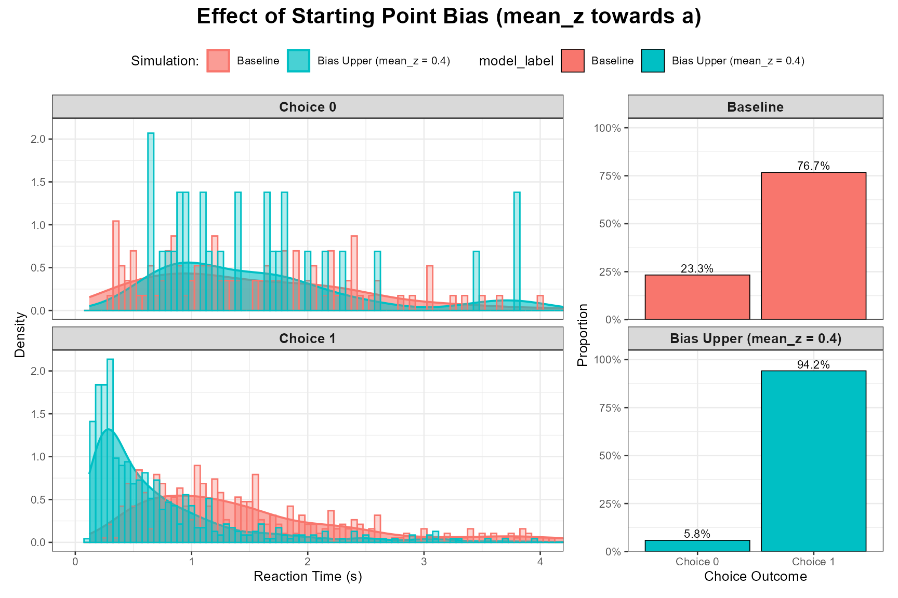

Interpreting DDM Parameters and Their Effects
Dogukan Nami Oztas
2025-05-16
04_interpreting_ddm_parameters.RmdIntroduction
The Diffusion Decision Model (DDM) characterizes decision-making through several key parameters, each with a distinct psychological interpretation. Understanding how these parameters influence predicted reaction times (RTs) and choice probabilities is crucial for applying and interpreting the DDM.
This vignette will:
Briefly explain the core DDM parameters.
Demonstrate the isolated effect of changing each parameter on simulated choice outcomes and RT distributions.
For our demonstrations, we will use a baseline set of DDM parameters and then vary one parameter at a time, comparing the results to this baseline. The across-trial variability parameters (sv, sz, st0) will be set to zero for the baseline and when examining mean parameters, unless the variability parameter itself is the one being investigated.
Baseline Simulation Parameters (unless otherwise specified for a given parameter):
baseline_params_vignette <- list(
mean_v = 0.1, # Mean drift rate
a = 0.5, # Threshold separation
mean_z = 0.25, # Mean starting point (a/2 = unbiased)
s = 0.2, # Within-trial noise (relatively low for clearer mean effects)
mean_ter = 0.1, # Mean non-decision time
sv = 0, # NO across-trial drift variability for baseline
sz = 0, # NO across-trial start point variability for baseline
st0 = 0, # NO across-trial non-decision time variability for baseline
dt = 0.01 # Simulation time step
)
n_trials_interpret <- 500 # Number of trials for each simulation
rt_plot_xlim_interpret <- c(0, 4) # Consistent x-axis limit for RT plotsFirst, let’s simulate our baseline data.
1. Mean Drift Rate (mean_v)
Cognitive Interpretation:
The drift rate (v) represents the average speed and direction of
evidence accumulation.
Magnitude (|v|): Reflects the quality or strength of the stimulus information driving the decision. Easier stimuli (higher discriminability) lead to a larger |v|.
Sign: Indicates the direction of accumulation. By convention, a positive v might represent evidence accumulation towards the “correct” or upper response boundary, while a negative v would be towards the alternative/lower boundary. v = 0 implies no systematic evidence favoring either option.
Expected Effects of Increasing |mean_v|:
Accuracy: Increases (higher probability of choosing the boundary favored by the drift).
Reaction Time: Decreases (faster decisions).
RT Distribution: Becomes less skewed as decisions become faster and more deterministic.
Demonstrating the Effect of mean_v
Let’s compare our baseline (mean_v = 0.15) with a lower mean_v (e.g., 0.05, representing a harder task) and a higher mean_v (e.g., 0.30, representing an easier task). Other parameters, including all variability parameters (sv, sz, st0), will be held at their baseline values (i.e., sv=0, sz=0, st0=0 for these mean_v comparisons unless sv itself is being manipulated).
Low mean_v (Harder Task):
params_low_v <- baseline_params_vignette
params_low_v$mean_v <- 0.05
set.seed(1002)
data_low_v <- do.call(simulate_diffusion_experiment_variable,
c(list(n_trials = n_trials_interpret), params_low_v))
data_low_v$model_label <- paste0("Low mean_v = ", params_low_v$mean_v)
plot_ddm_parameter_comparison(
data_sim1 = data_baseline,
data_sim2 = data_low_v,
param_varied = "Effect of Lower Mean Drift Rate (mean_v)",
rt_xlim = rt_plot_xlim_interpret
)
Observation: As expected, a lower mean_v leads to slower RTs, lower accuracy (higher proportion of choices for the “wrong” boundary, here Choice 0 if mean_v is positive), and potentially more skewed RT distributions due to the increased influence of noise.
High mean_v (Easier Task):
params_high_v <- baseline_params_vignette
params_high_v$mean_v <- 0.30
set.seed(1003)
data_high_v <- do.call(simulate_diffusion_experiment_variable,
c(list(n_trials = n_trials_interpret), params_high_v))
data_high_v$model_label <- paste0("High mean_v = ", params_high_v$mean_v)
plot_ddm_parameter_comparison(
data_sim1 = data_baseline,
data_sim2 = data_high_v,
param_varied = "Effect of Higher Mean Drift Rate (mean_v)",
rt_xlim = rt_plot_xlim_interpret
)
Observation: A higher mean_v results in faster RTs, higher accuracy for the favored response, and RT distributions that are typically less skewed and more concentrated at faster times.
2. Threshold Separation (a)
Cognitive Interpretation:
The threshold separation (a) represents the amount of evidence that
needs to be accumulated before a decision is made. It reflects the
decision-maker’s response caution or criterion setting.
High a: Corresponds to a cautious strategy, requiring more evidence, leading to slower but more accurate responses.
Low a: Corresponds to a speed-focused or lenient strategy, requiring less evidence, leading to faster but potentially less accurate responses.
This is the primary parameter controlling the speed-accuracy tradeoff.
Expected Effects of Increasing a:
Accuracy: Increases (more evidence accumulated, so less chance of noise leading to the wrong boundary).
Reaction Time: Increases (takes longer to accumulate more evidence).
RT Distribution: Becomes more spread out and often more skewed.
Demonstrating the Effect of a
Let’s compare our baseline (a = 1.0) with a lower a (e.g., 0.7, speed focus) and a higher a (e.g., 1.5, accuracy focus). mean_z will be adjusted to remain a/2.
Low a (Speed Focus):
params_low_a <- baseline_params_vignette
params_low_a$a <- 0.3
params_low_a$mean_z <- params_low_a$a / 2 # Keep z unbiased
set.seed(1004)
data_low_a <- do.call(simulate_diffusion_experiment_variable,
c(list(n_trials = n_trials_interpret), params_low_a))
data_low_a$model_label <- paste0("Low a = ", params_low_a$a, " (z=", params_low_a$mean_z, ")")
plot_ddm_parameter_comparison(
data_sim1 = data_baseline, # Baseline has a=1.0, z=0.5
data_sim2 = data_low_a,
param_varied = "Effect of Lower Threshold (a)",
rt_xlim = rt_plot_xlim_interpret
)
High a (Accuracy Focus):
params_high_a <- baseline_params_vignette
params_high_a$a <- 1
params_high_a$mean_z <- params_high_a$a / 2 # Keep z unbiased
set.seed(1005)
data_high_a <- do.call(simulate_diffusion_experiment_variable,
c(list(n_trials = n_trials_interpret), params_high_a))
data_high_a$model_label <- paste0("High a = ", params_high_a$a, " (z=", params_high_a$mean_z, ")")
plot_ddm_parameter_comparison(
data_sim1 = data_baseline,
data_sim2 = data_high_a,
param_varied = "Effect of Higher Threshold (a)",
rt_xlim = rt_plot_xlim_interpret
)
Observation: The plots should clearly demonstrate the speed-accuracy tradeoff. Higher a leads to slower RTs and higher accuracy for the response favored by mean_v.
3. Within-Trial Noise (s)
Cognitive Interpretation:
The parameter s represents the standard deviation of the within-trial
Gaussian noise affecting the evidence accumulation process at each
moment (or time step dt in our simulation, where noise is s * sqrt(dt)).
It reflects the unreliability or inconsistency of information processing
from moment to moment.
- Higher s: More noisy accumulation, leading to greater variability in RTs and potentially lower accuracy for a given drift rate.
Expected Effects of Increasing s:
Accuracy: Decreases (for a fixed v and a, more noise makes it easier to hit the wrong boundary).
Reaction Time: Mean RT might increase slightly or become more variable. The overall distribution will be wider.
RT Distribution: Becomes more spread out (higher variance).
Demonstrating the Effect of s
Let’s compare our baseline (s = 0.1) with a higher s (e.g., your default of 0.35, which is quite high relative to s=0.1 often used as a scaling parameter).
Higher s (More Within-Trial Noise):
params_high_s <- baseline_params_vignette
params_high_s$s <- 0.35 # Your default, quite noisy
set.seed(1006)
data_high_s <- do.call(simulate_diffusion_experiment_variable,
c(list(n_trials = n_trials_interpret), params_high_s))
data_high_s$model_label <- paste0("High s = ", params_high_s$s)
plot_ddm_parameter_comparison(
data_sim1 = data_baseline, # Baseline has s=0.1
data_sim2 = data_high_s,
param_varied = "Effect of Higher Within-Trial Noise (s)",
rt_xlim = rt_plot_xlim_interpret # May need to adjust xlim if RTs get very long
)
Observation: Higher s should lead to wider RT distributions (more variance) and generally lower accuracy for the favored response boundary, as the noisy process is more likely to terminate at the incorrect boundary.
4. Drift Rate Variability (sv)
Cognitive Interpretation:
sv represents the standard deviation of the across-trial variability in
the mean drift rate. This means that from trial to trial, the average
rate of evidence accumulation (v_trial) itself fluctuates around mean_v,
following a Normal distribution: v_trial ~ Normal(mean_v, sv).
- This can reflect trial-to-trial changes in attention, stimulus encoding efficiency, or slight variations in stimulus properties.
Expected Effects of Increasing sv:
Accuracy: May decrease slightly, especially if sv is large relative to mean_v, as some trials will have very low or even negative effective drift rates.
Reaction Time: Mean RT might increase.
RT Distribution: Becomes significantly more right-skewed. This is one of the most important effects of sv. It helps explain very slow responses and is crucial for fitting the tails of empirical RT distributions. It also plays a key role in modeling the relationship between correct and error RTs (e.g., allowing for slow errors).
Demonstrating the Effect of sv
Let’s compare our baseline (where sv = 0) with a version where sv is substantially non-zero (e.g., sv = 0.20, using mean_v = 0.15 from baseline).
Non-Zero sv:
params_sv <- baseline_params_vignette # sv=0 in baseline_params_vignette
params_sv_effect <- baseline_params_vignette
params_sv_effect$sv <- 0.20 # Introduce drift variability
set.seed(1007)
data_sv_effect <- do.call(simulate_diffusion_experiment_variable,
c(list(n_trials = n_trials_interpret), params_sv_effect))
data_sv_effect$model_label <- paste0("sv = ", params_sv_effect$sv)
plot_ddm_parameter_comparison(
data_sim1 = data_baseline, # Baseline has sv=0
data_sim2 = data_sv_effect,
param_varied = "Effect of Drift Rate Variability (sv)",
rt_xlim = rt_plot_xlim_interpret # May need wider xlim if sv causes very slow RTs
)
Observation: The RT distributions for the model with sv > 0 should be noticeably more skewed to the right compared to the baseline with sv = 0. The mean RT might also be slower.
5. Mean Starting Point / Bias (mean_z)
Cognitive Interpretation:
The starting point z (or mean_z if sz > 0) reflects an initial bias
towards one response boundary over the other before evidence
accumulation begins.
mean_z = a/2: Unbiased start, equidistant from both boundaries.
mean_z > a/2: Bias towards the upper boundary a.
mean_z < a/2: Bias towards the lower boundary 0.
This can be due to prior expectations, differential payoffs, or stimulus probabilities.
Expected Effects of Shifting mean_z away from a/2:
Accuracy/Choice Probability: Increases for the response associated with the closer boundary, decreases for the other.
Reaction Time: Decreases for responses towards the closer (biased-towards) boundary, and increases for responses towards the farther boundary.
RT Distribution: The shape might change, particularly for the less frequent response.
Demonstrating the Effect of mean_z
Let’s compare our unbiased baseline (mean_z = 0.25 for a = 0.5) with scenarios where mean_z is biased towards the lower boundary (e.g., 0.1) and towards the upper boundary (e.g., 0.4).
Bias Towards Lower Boundary (Choice 0):
params_bias_lower <- baseline_params_vignette
params_bias_lower$mean_z <- 0.1 # For a=1.0
set.seed(1008)
data_bias_lower <- do.call(simulate_diffusion_experiment_variable,
c(list(n_trials = n_trials_interpret), params_bias_lower))
data_bias_lower$model_label <- paste0("Bias Lower (mean_z = ", params_bias_lower$mean_z, ")")
plot_ddm_parameter_comparison(
data_sim1 = data_baseline, # Baseline z=0.5
data_sim2 = data_bias_lower,
param_varied = "Effect of Starting Point Bias (mean_z towards 0)",
rt_xlim = rt_plot_xlim_interpret
)
Bias Towards Upper Boundary (Choice 1):
params_bias_upper <- baseline_params_vignette
params_bias_upper$mean_z <- 0.4 # For a=1.0
set.seed(1009)
data_bias_upper <- do.call(simulate_diffusion_experiment_variable,
c(list(n_trials = n_trials_interpret), params_bias_upper))
data_bias_upper$model_label <- paste0("Bias Upper (mean_z = ", params_bias_upper$mean_z, ")")
plot_ddm_parameter_comparison(
data_sim1 = data_baseline,
data_sim2 = data_bias_upper,
param_varied = "Effect of Starting Point Bias (mean_z towards a)",
rt_xlim = rt_plot_xlim_interpret
)
Observation: When biased towards a boundary, responses to that boundary should become more frequent and faster. Responses to the other boundary should become less frequent and slower.
Other Parameters (mean_ter, sz, st0)
While we focused on mean_v, a, s, sv, and mean_z, the other parameters also have distinct effects:
mean_ter (Mean Non-Decision Time): Primarily shifts the entire RT distribution to the right or left without changing its shape much. Higher mean_ter = slower overall RTs.
-
sz (Starting Point Variability): Introduces trial-to-trial jitter in the starting point around mean_z. This can:
Increase the overall variance of RTs slightly.
Contribute to “fast errors”: if z_trial happens to start very close to the boundary opposite to the drift, noise can lead to a quick incorrect response.
st0 (Non-Decision Time Variability): Introduces trial-to-trial jitter in ter around mean_ter. This primarily “smears out” the leading edge (fastest part) of the RT distribution, making it less sharp.
Conclusion
This vignette has demonstrated the qualitative effects of key DDM parameters on choice probabilities and reaction time distributions. By systematically varying each parameter while holding others constant (or at a baseline level of zero variability for sv, sz, st0 when examining mean parameters), we can build a strong intuition for how each component of the DDM contributes to shaping simulated decision-making behavior. This understanding is fundamental for applying the DDM to analyze and interpret empirical data.
The interactive Shiny app provided with this project offers a dynamic way to explore these parameter interactions further.